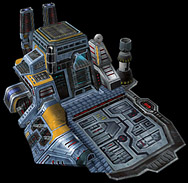
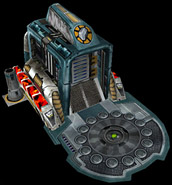
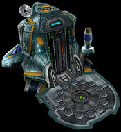
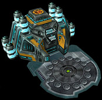
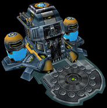
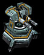
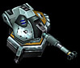
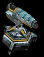
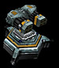

|
Здания
На карте есть два типа сооружений:
1. Базы - только те здания, где можно строить роботов.
 |
Базы легко отличить от других строений - они имеют раздвижные двери с поднимающимся
лифтом, на котором выезжает готовый робот.
При нажатии на такой завод, в правой нижней части появляются кнопки функций
завода: постройка турелей и роботов.
|
2. Заводы - здания для добычи ресурсов: титана, микромодулей,
энергии и плазмы.
| Титановый
завод |
Инженерный комплекс (микромодули) |
|  |
 |
| Электростанция (энергия)
|
Лаборатория плазмы |
|  |
 |
Щелчок по нужному объекту позволяет выделить его и использовать доступные функции
- так, например, выделив базу, вы можете строить роботов или турели. При выделении
завода вы можете строить турели в специально отведенных для каждого здания местах.
Виды турелей:
 |
Легкая пушка
двухствольное орудие. Стреляет снарядами малой мощности из двух стволов сразу.
|
 |
Тяжелая пушка
одноствольное орудие. Производит выстрелы из длинного ствола мощным разрывным
снарядом.
|
 |
Лазер
стационарная лазерная установка. Производит выстрелы непрерывным лазерным лучом.
Прожигает все виды брони.
|
 |
Ракетница
мощное ракетное орудие. Стреляет бронебойными ракетами с плазменными двигателями.
|
|